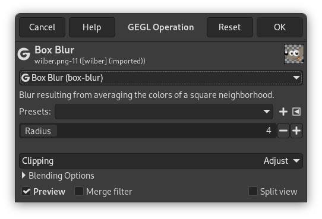

GEGL (“Generic Graphical Library”) is a graph based image processing library designed to handle various image processing tasks needed in GIMP. Most GEGL operations have their own menu commands in GIMP. The majority of them are filters found in the Colors and Filters menus.
However, there are some GEGL operations that don't have their own command. Either because the operation was not considered important enough, or because the operation may still be experimental.
The GEGL Operation filter was added to give access to all these operations that you can't use in another way. It enables applying GEGL operations to the image and gives on-canvas previews of the results. New GEGL operations made by third-party developers will also show up in this dialog.

- Operação
-
Clique sobre este botão para selecionar a operação que você deseja aplicar à seleção ativa ou, caso não haja nenhuma seleção, à camada ativa.
Algumas dessas operações são muitas básicas como a “color” (cor)que preenche a seleção ativa ou camada com a cor especificada, enquanto operações como a “fractal-explorer” (Explorador de fractais) produz padrões muito complexos; assim como vários dos filtros de renderização.
- Configurações de operação
-
As configurações de operação dependem da Operação escolhida:
Figura 14.145. Exemplo de “Configurações de operação”

Operação da GEGL de “gaussian-blur” (Desfocagem gaussiana) selecionada.
Se as opções da operação da GEGL selecionada não forem auto-explicativas (adivinhe qual é propósito da opção “cor” da operação “cor”??) você pode procurar por uma ferramenta que não seja daGEGL. Por exemplo, o filtro Explorador de fractal pode ter as mesmas opções da operação que o “fractal-explorer” da GEGL.
Ou você pode usar a incrível funcionalidade de pré-visualização em tempo real na imagem e simplesmente experimentar as diferentes opções de cada operação.
- Pré-visualização
-
If this option is checked, as it is by default, you will get an on-canvas preview of the selected operation as soon as the operation is finished. You will have to press the button to actually apply the operation to the image.
The buttons
- Restaurar
-
Pressing this button resets the operation settings to their defaults.
- Cancelar
-
Clicking on this button aborts the GEGL operation and leaves your image untouched. This is equivalent to close the dialog window using the usual button provided by your window manager.
- OK
-
Você precisa pressionar este botão para aplicar a operação selecionada à imagem. Então a janela de diálogo será fechada.